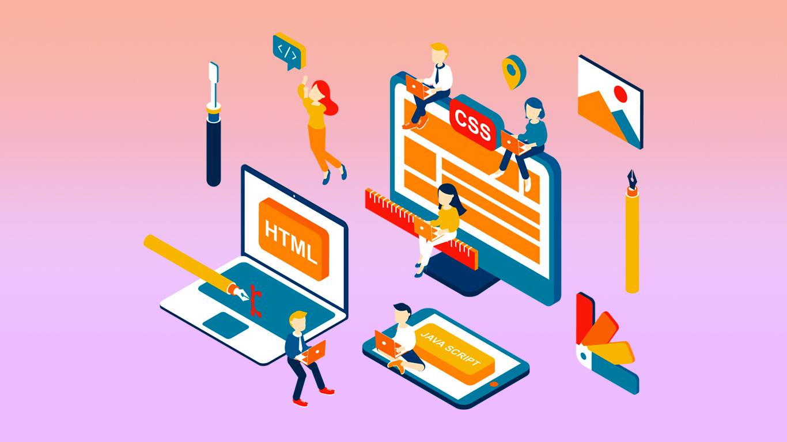

Desarrollo de las Tecnologías Web
Las tecnologías web, se definen como un conjunto de estándares, lenguajes de programación y especificadores como HTML o JavaScript y protocolos de comunicación cliente servidor como HTTP o HTTPS, que permiten la ejecución e interconexión de aplicaciones, o el intercambio de información a través de la World Wide Web. Estos estándares están aprobados por organismos internacionales como el W3C (World Wide Web Consortium) (Brys, 2023). Las tecnologías web han evolucionado, desde una web 1.0 de lectura estática a la web 2.0 que se centra en la interacción y colaboración del usuario, así como en el acceso a una conexión móvil; y últimamente a la web 3.0, que se basa en la interconexión de datos de manera autónoma (Brys, 2023).
